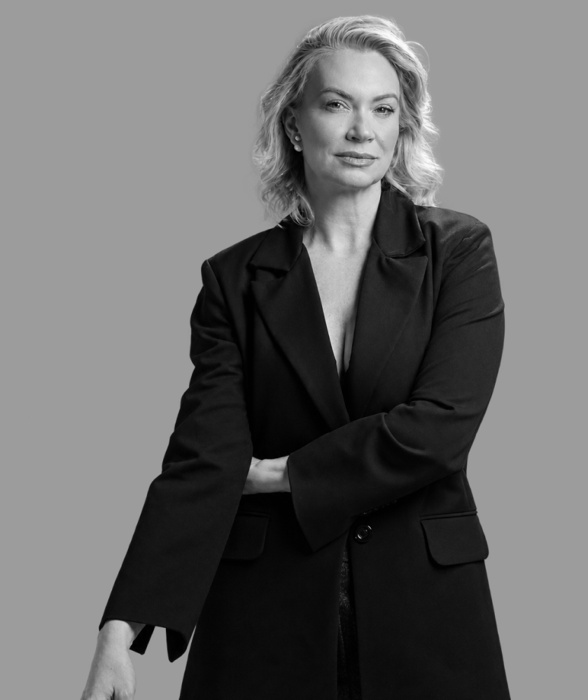
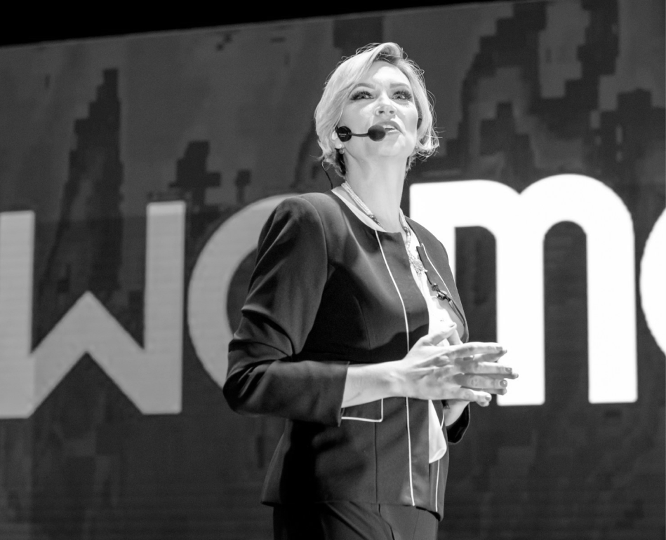
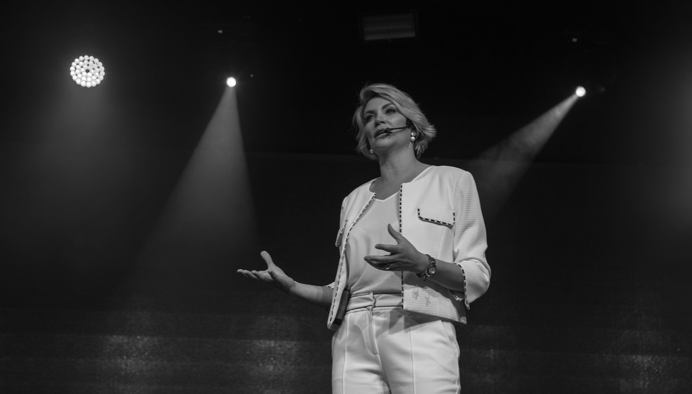
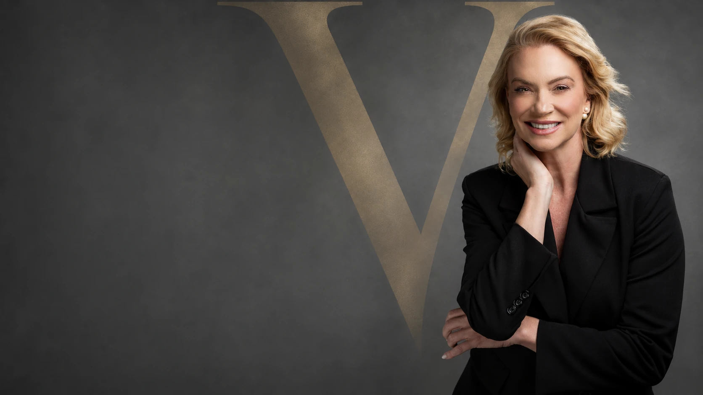
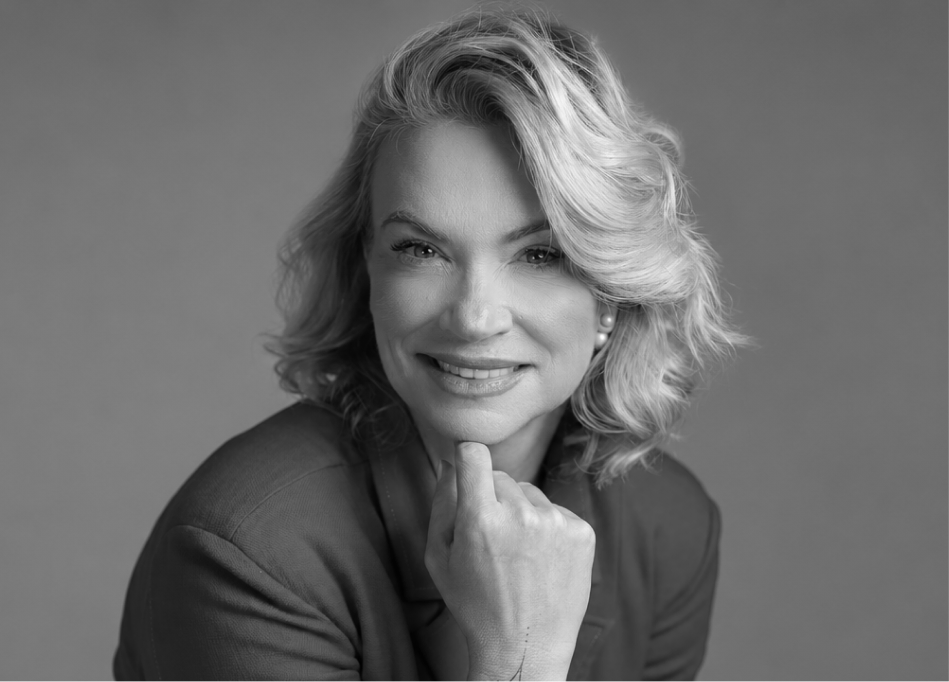

VIRTÙ
VeridianaCavalheri

↓
O ladohumanodo negócio.
Sua estratégia ganha força nas pessoas que a colocam em prática.
A Virtù conecta desenvolvimento de lideranças, cultura organizacional e gestão de pessoas aos desafios de crescimento da sua empresa.
Quero conversar sobre minha empresa
↗
Quem já abriu espaço para essa conversa.
Organizações de diferentes setores fazem parte da trajetória de atuação de Veridiana e da Virtù.
Você vê até onde sua empresa pode chegar.Vamos preparar seu time para chegar lá.

Oportunidade existe.O difícil é ter um timepronto para aproveitá-la.
Você conhece o potencial da sua empresa. Há mercado, há planos e há espaço para crescer. Mas o próximo passo fica distante quando o que o negócio precisa não encontra resposta nas entregas da equipe.
Entre a estratégia e o resultado, existem pessoas que precisam de direção, competência e razões para se comprometer.
É nesse espaço que a Virtù trabalha. Conectamos aprendizagem corporativa aos desafios da sua empresa para desenvolver quem lidera, fortalecer o time e transformar os valores em atitudes que aparecem no trabalho.
Quero conversar sobre esse desafio
↗

Liderança se aprende.E se coloca em prática.
Assista a um trecho da Veri em ação e veja como ela conecta comportamento, liderança e os desafios reais de quem conduz pessoas.
TEASER DE LIDERANÇA · 2 MIN 22 S

As cinco dimensões
da liderança
Pessoas, cultura e decisões para fortalecer a liderança.
Conhecer a palestra
↗


Auto Performance
para times
Autorresponsabilidade e consistência para crescer em equipe.
Conhecer a palestra
↗
Por onde sua empresaprecisa começar?
Encontre
sua jornada.
↘
01
Palestras

Palestras
Leve uma conversa sobre liderança, comunicação, performance ou autoliderança para o seu evento. Conteúdos para provocar reflexão e colocar os desafios de pessoas no centro da conversa.
CONHECER AS PALESTRAS ↗02
Meta V — Acesso gravado
Meta V — Acesso gravado
Amplie seu repertório de gestão com conteúdos que você pode estudar no seu ritmo. Um caminho para desenvolver sua liderança com flexibilidade de horário.
CONHECER O ACESSO GRAVADO ↗03

Super Humanos — Oficina
Super Humanos — Oficina
Trabalhe habilidades de liderança e leve o aprendizado para os desafios da equipe. Uma jornada que conecta conteúdo e aplicação, com encontros conforme a modalidade contratada.
CONHECER A OFICINA ↗04
Mentoria Meta V

Mentoria Meta V
Encontre espaço para discutir decisões, rever práticas e construir sua gestão com orientação. Para empresários, executivos e líderes que precisam conduzir pessoas e fazer o negócio avançar.
CONHECER A MENTORIA ↗05

PHD
PHD
Desenvolva as habilidades que sua equipe precisa fortalecer. Um projeto in company desenhado a partir dos desafios e das prioridades da sua organização.
CONHECER O PHD ↗06

Vanguard
Vanguard
Estruture a gestão de pessoas para sustentar o próximo passo da empresa. Uma consultoria que conecta diagnóstico, cultura e processos de gestão à implementação e ao acompanhamento.
CONHECER O VANGUARD ↗Você reconhece sua empresaem alguma destas situações?
01
Você enxerga oportunidades, mas falta uma equipe preparada para dar o próximo passo.

VeridianaCavalheri.
Conhecimento de gente.Vivência de negócio.
Fundadora da Virtù, Veridiana é palestrante, consultora, mentora e autora de Antifraca. Atua desde 2012 conectando desenvolvimento humano e gestão de negócios.
Seu trabalho aproxima o que as pessoas aprendem das decisões e atitudes que o negócio exige: liderar com clareza, desenvolver equipes e construir compromisso com aquilo que a empresa quer alcançar.
Conhecer a trajetória de Veridiana
↗
“
Veridiana, que palestra incrível! Você nos lembrou que liderança vai muito além de metas: é sobre pessoas, consciência e atitude. Obrigado por inspirar, provocar reflexões e elevar o nível da nossa jornada como líderes.
Maxwell Lage
Presidente | Grupo Mult
Dúvidasfrequentes.
5 perguntas frequentes
Não sei qual programa escolher. Por onde começo?
Comece contando para a nossa equipe qual desafio você precisa enfrentar, quem participa desse processo e o que deseja desenvolver. Essa conversa ajuda a identificar a jornada mais adequada.
Posso contratar somente uma palestra?
Sim. Conte o objetivo do encontro, o perfil do público, a cidade e a data prevista. A equipe orienta a escolha do tema e verifica a disponibilidade.
A Virtù desenvolve projetos para empresas?
Sim. O PHD trabalha o desenvolvimento de habilidades da equipe. O Vanguard atua na estruturação da gestão de pessoas. O escopo de cada projeto é definido em proposta, conforme o contexto da organização.
Qual a diferença entre acesso gravado, oficina e mentoria?
O acesso gravado permite estudar os conteúdos no seu ritmo. A oficina conecta aprendizado e aplicação prática. A mentoria oferece orientação para discutir desafios e desenvolver a gestão. Encontros e condições variam conforme a modalidade contratada.
Como consulto valores e disponibilidade?
Entre em contato com a equipe da Virtù. A proposta considera a solução escolhida, o público e o escopo do trabalho.
O próximo passoda sua empresapassa pelas pessoas.
Conte o que está acontecendo na sua empresa e o que hoje dificulta seu crescimento.
Vamos entender o que seu time precisa desenvolver e identificar por onde começar.
Quero conversar com a Virtù
↗